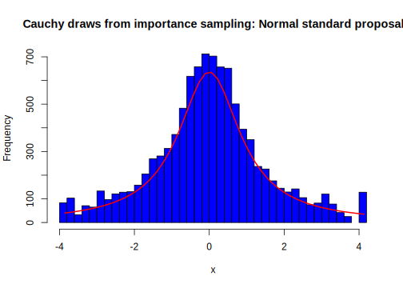
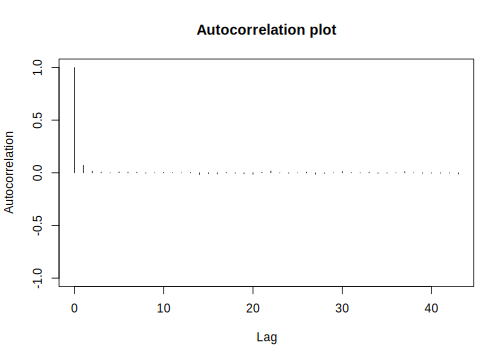

4.2 Importance sampling
Up to this section, we have introduced MCMC methods for sampling from the posterior distribution when it does not have a standard closed form. However, MCMC methods have some limitations. First, the samples are generated sequentially, which complicates parallel computing. Although multiple MCMC chains can be run simultaneously, this approach—often referred to as brute-force parallelization—does not fully address the sequential nature of individual chains. Second, consecutive samples are correlated, which reduces the effective sample size and complicates convergence diagnostics.
Thus, in this section, we introduce importance sampling (IS), a simulation method for drawing samples from the posterior distribution that avoids these limitations. Unlike MCMC, IS does not require satisfying the balancing condition, making it conceptually and mathematically simpler to implement in certain situations. Moreover, importance weights can be reused to analyze posterior quantities, compute marginal likelihoods, compare models, approximate new target distributions, and allow for straightforward parallelization in large-scale problems.
However, the critical challenge in IS lies in selecting an appropriate proposal distribution. This involves satisfying both support and stability conditions, which can be difficult to achieve, particularly in high-dimensional problems. In such cases, MCMC methods may be more suitable.
The starting point is evaluating the integral:
\[\begin{align} \mathbb{E}_{\pi}[h(\boldsymbol{\theta})] &= \int_{\Theta} h(\boldsymbol{\theta}) \pi(\boldsymbol{\theta} \mid y) d\boldsymbol{\theta}, \tag{4.1} \end{align}\]
where \(\mathbb{E}_{\pi}\) denotes expected value under the posterior distribution. Thus, we can approximate Equation (4.1) by
\[\begin{align} \bar{h}(\boldsymbol{\theta})_S &= \frac{1}{S} \sum_{s=1}^S h(\boldsymbol{\theta}^{(s)}), \tag{4.2} \end{align}\]
where \(\boldsymbol{\theta}^{(s)}\) are draws from \(\pi(\boldsymbol{\theta} \mid y)\). The strong law of large numbers shows that \(\bar{h}(\boldsymbol{\theta})_S\) converges (almost surely) to \(\mathbb{E}_{\pi}[h(\boldsymbol{\theta})]\) as \(S \to \infty\).
The challenge arises when we do not know how to obtain samples from \(\pi(\boldsymbol{\theta}\mid \boldsymbol{y})\). The ingenious idea is to express Equation (4.1) in a different way using the importance sampling fundamental identity (Christian P. Robert and Casella 2011):
\[\begin{align} \mathbb{E}_{\pi}[h(\boldsymbol{\theta})] &= \int_{\boldsymbol{\Theta}} h(\boldsymbol{\theta}) \pi(\boldsymbol{\theta}\mid \boldsymbol{y})\frac{q(\boldsymbol{\theta})}{q(\boldsymbol{\theta})}d\boldsymbol{\theta} \nonumber \\ &= \mathbb{E}_{q}\left[\frac{h(\boldsymbol{\theta})\pi(\boldsymbol{\theta}\mid \boldsymbol{y})}{q(\boldsymbol{\theta})}\right], \tag{4.3} \end{align}\]
where \(q(\boldsymbol{\theta})\) is the proposal distribution.
Thus, we have
\[\begin{align} \frac{1}{S}\sum_{s=1}^S \left[\frac{h(\boldsymbol{\theta}^{(s)})\pi(\boldsymbol{\theta}^{(s)}\mid \boldsymbol{y})}{q(\boldsymbol{\theta}^{(s)})}\right] &= \frac{1}{S}\sum_{s=1}^S h(\boldsymbol{\theta}^{(s)})w(\boldsymbol{\theta}^{(s)}), \end{align}\]
where \(w(\boldsymbol{\theta}^{(s)})= \left[\frac{\pi(\boldsymbol{\theta}^{(s)}\mid \boldsymbol{y})}{q(\boldsymbol{\theta}^{(s)})}\right]\) are called the importance weights, and \(\boldsymbol{\theta}^{(s)}\) are samples from the proposal distribution. This expression converges to \(\mathbb{E}_{\pi}[h(\boldsymbol{\theta})]\) given that the support of \(q(\boldsymbol{\theta})\) includes the support of \(\pi(\boldsymbol{\theta}\mid \boldsymbol{y})\).
There are many proposal distributions that satisfy the support condition. However, the stability of the method depends heavily on the variability of the importance weights. In particular, the variance of
\[\begin{align} \frac{1}{S}\sum_{s=1}^S h(\boldsymbol{\theta}^{(s)})w(\boldsymbol{\theta}^{(s)}) \end{align}\]
can be large if the proposal distribution has lighter tails than the posterior distribution. In this case, the weights \(w(\boldsymbol{\theta}^{(s)})\) will vary widely, assigning too much importance to a few values of \(\boldsymbol{\theta}^{(s)}\). Thus, it is important to use proposals that have thicker tails than the posterior distribution. In any case, we should check the adequacy of the proposal distribution by analyzing the behavior of the importance weights. If they are distributed more or less uniformly over the support, it is a good sign. Consider, for instance, the extreme case where \(q(\boldsymbol{\theta}) = \pi(\boldsymbol{\theta}\mid \boldsymbol{y})\), then \(w(\boldsymbol{\theta}^{(s)}) = 1\) everywhere.
A natural choice in Bayesian inference is to use the prior distribution as the proposal, given that it is a proper density function. The prior distribution typically has heavier tails than the posterior by construction, and it is usually a distribution that allows for easy sampling.
The most relevant point for us is that importance sampling provides a way to simulate from the posterior distribution when there is no closed-form solution. The method generates samples \(\boldsymbol{\theta}^{(s)}\) from \(q(\boldsymbol{\theta})\) and computes the importance weights \(w(\boldsymbol{\theta}^{(s)})\). Thus, if we resample with replacement from \(\boldsymbol{\theta}^{(1)},\boldsymbol{\theta}^{(2)},\dots,\boldsymbol{\theta}^{(S)}\), selecting \(\boldsymbol{\theta}^{(s)}\) with probability proportional to \(w(\boldsymbol{\theta}^{(s)})\), we would get a sample \(\boldsymbol{\theta}^{*(1)},\boldsymbol{\theta}^{*(2)},\dots,\boldsymbol{\theta}^{*(L)}\) of size \(L\) from \(\pi(\boldsymbol{\theta}\mid \boldsymbol{y})\) (A. F. Smith and Gelfand 1992; Donald B. Rubin 1988). This is named sampling/importance resampling (SIR) algorithm. Observe that the number of times \(L^{(s)}\) each particular point \(\boldsymbol{\theta}^{(s)}\) is selected follows a binomial distribution with size \(L\), and probabilities proportional to \(w^{(s)}\). Consequently, the vector \(L_{\boldsymbol{\theta}} = \left\{L_{\boldsymbol{\theta}^1}, L_{\boldsymbol{\theta}^2}, \dots, L_{\boldsymbol{\theta}^S}\right\}\) follows a multinomial distribution with \(L\) trials and probabilities proportional to \(w(\boldsymbol{\theta}^{(s)})\), \(s = 1, 2, \dots, S\) (Olivier Cappé, Godsill, and Moulines 2007). Therefore, the resampling step ensures that points in the first-stage sample with small importance weights are more likely to be discarded, while points with high weights are replicated in proportion to their importance weights. In most applications, it is typical to have \(S \gg L\).
The intuition is that importance weights are scaling factors that correct for the bias introduced by drawing from \(q(\boldsymbol{\theta}^{(s)})\) instead of \(\pi(\boldsymbol{\theta}^{(s)}\mid \boldsymbol{y})\); thus, when combined, the samples and weights effectively recreate the posterior distribution, ensuring the resampled data set reflects the posterior. Let’s prove this:
\[\begin{align*} P(\boldsymbol{\theta}^*\in A) &=\frac{1}{S}\sum_{s=1}^S{w}^{(s)}\mathbb{1}_{A}(\boldsymbol{\theta}^{(s)})\\ &\rightarrow \mathbb{E}_q\left[\mathbb{1}_{\in A}(\boldsymbol{\theta})\frac{\pi(\boldsymbol{\theta}\mid \boldsymbol{y})}{q(\boldsymbol{\theta})}\right]\\ &=\int_{A}\left[\frac{\pi(\boldsymbol{\theta}\mid \boldsymbol{y})}{q(\boldsymbol{\theta})}\right]q(\boldsymbol{\theta})d\boldsymbol{\theta}\\ &=\int_{A}\pi(\boldsymbol{\theta}\mid \boldsymbol{y})d\boldsymbol{\theta}. \end{align*}\]
Thus, \(\boldsymbol{\theta}^*\) is approximately distributed as an observation from \(\pi(\boldsymbol{\theta}\mid \boldsymbol{y})\).
However, the weights \(\pi(\boldsymbol{\theta}^{(s)}\mid \boldsymbol{y})/(S q(\boldsymbol{\theta}^{(s)}))\) do not sum up to 1, and we need to standardize them:
\[ w^*(\boldsymbol{\theta}^{(s)})=\frac{\frac{1}{S} w(\boldsymbol{\theta}^{(s)})}{\frac{1}{S}\sum_{s=1}^S w(\boldsymbol{\theta}^{(s)})}. \]
Note that we could alternatively arrive at these weights as follows:
\[\begin{align*} \mathbb{E}_{\pi}[h(\boldsymbol{\theta})]&=\int_{\boldsymbol{\Theta}} \left[\frac{h(\boldsymbol{\theta}) \pi(\boldsymbol{\theta}\mid \boldsymbol{y})}{q(\boldsymbol{\theta})}\right]q(\boldsymbol{\theta})d\boldsymbol{\theta}\\ &=\frac{\int_{\boldsymbol{\Theta}}\left[\frac{h(\boldsymbol{\theta}) \pi(\boldsymbol{\theta}\mid \boldsymbol{y})}{q(\boldsymbol{\theta})}\right] q(\boldsymbol{\theta})d\boldsymbol{\theta}}{\int_{\boldsymbol{\Theta}}\left[\frac{ \pi(\boldsymbol{\theta}\mid \boldsymbol{y})}{q(\boldsymbol{\theta})}\right] q(\boldsymbol{\theta})d\boldsymbol{\theta}}. \end{align*}\]
Then,
\[ \frac{\frac{1}{S}\sum_{s=1}^S h(\boldsymbol{\theta}^{(s)})w(\boldsymbol{\theta}^{(s)})}{\frac{1}{S}\sum_{s=1}^S w(\boldsymbol{\theta}^{(s)})}= \sum_{s=1}^S h(\boldsymbol{\theta}^{(s)})w^*(\boldsymbol{\theta}^{(s)}). \]
This alternative expression also converges (almost surely) to \(\mathbb{E}_{\pi}[h(\boldsymbol{\theta})]\).
In addition, this expression is very useful because if we do not have the marginal likelihood in the posterior distribution, this constant cancels out in \(w^*(\boldsymbol{\theta}^{(s)})\). Although this estimator is biased, the bias is small and provides good gains in variance reduction compared with the non-standardized option (Christian P. Robert and Casella 2011).
A nice by-product of implementing IS is that it easily allows the calculation of the marginal likelihood. In particular, we know from Bayes’ rule that
\[ p(\boldsymbol{y})^{-1}=\frac{\pi(\boldsymbol{\theta}\mid \boldsymbol{y})}{p(\boldsymbol{y}\mid \boldsymbol{\theta})\times \pi(\boldsymbol{\theta})}, \]
then,
\[\begin{align*} \int_{\boldsymbol{\Theta}}p(\boldsymbol{y})^{-1}q(\boldsymbol{\theta})d\boldsymbol{\theta} &=\int_{{\Theta}}\frac{q(\boldsymbol{\theta})}{p(\boldsymbol{y}\mid \boldsymbol{\theta})\times \pi(\boldsymbol{\theta})}\pi(\boldsymbol{\theta}\mid \boldsymbol{y})d\boldsymbol{\theta}\\ &=\mathbb{E}_{\pi}\left[\frac{q(\boldsymbol{\theta})}{p(\boldsymbol{y}\mid \boldsymbol{\theta})\times \pi(\boldsymbol{\theta})}\right]. \end{align*}\]
Thus, an estimate of the marginal likelihood is
\[ \left[\frac{1}{S}\sum_{s=1}^S\frac{q(\boldsymbol{\theta}^{*(s)})}{p(\boldsymbol{y}\mid \boldsymbol{\theta}^{*(s)})\times\pi(\boldsymbol{\theta}^{*(s)})}\right]^{-1}. \]
This is the Gelfand-Dey method to calculate the marginal likelihood (Alan E. Gelfand and Dey 1994).
Example: Cauchy distribution
Let’s assume that the posterior distribution is Cauchy with parameters 0 and 1. We perform an importance sampling algorithm using as proposals a standard normal distribution and a Student’s t distribution with 3 degrees of freedom. The following code shows how to do this.
rm(list = ls()); set.seed(010101)
S <- 20000 # Size proposal
# Importance sampling from standard normal proposal
thetaNs <- rnorm(S)
wNs <- dcauchy(thetaNs)/dnorm(thetaNs)
wNstars <- wNs/sum(wNs)
L <- 10000 # Size posterior
thetaCauchyN <- sample(thetaNs, L, replace = TRUE, prob = wNstars)
h <- hist(thetaCauchyN, breaks=50, col="blue", xlab="x", main="Cauchy draws from importance sampling: Normal standard proposal")
pfit <- seq(min(thetaCauchyN),max(thetaCauchyN),length=50)
yfit<-dcauchy(pfit)
yfit <- yfit*diff(h$mids[1:2])*length(thetaCauchyN)
lines(pfit, yfit, col="red", lwd=2)
# Importance sampling from Student's t proposal
df <- 3
thetaTs <- rt(S, df = df)
wTs <- dcauchy(thetaTs)/dt(thetaTs, df = df)
wTstars <- wTs/sum(wTs)
thetaCauchyT <- sample(thetaTs, L, replace = TRUE, prob = wTstars)
h <- hist(thetaCauchyT, breaks=50, col="blue", xlab="x", main="Cauchy draws from importance sampling: Student's t proposal")
pfit <- seq(min(thetaCauchyT),max(thetaCauchyT),length=50)
yfit<-dcauchy(pfit)
yfit <- yfit*diff(h$mids[1:2])*length(thetaCauchyT)
lines(pfit, yfit, col="red", lwd=2)
plot(wNstars, main = "Importance sampling: Cauchy distribution", ylab = "Weights", xlab = "Iterations")
points(wTstars, col = "blue")
legend("topright", legend = c("Normal", "Student's t"), col = c("black", "blue"), pch = c(1, 1))
The first and second figures show the histograms of the posterior draws using the normal and Student’s t-distributions, respectively, along with the density of the Cauchy distribution. The spike in the posterior draws from the standard normal proposal arises due to the lighter tails of the standard normal compared to the Cauchy distribution, consequently assigning too much weight to a specific draw from the normal distribution.
The third figure shows the weights using the standard normal distribution (black dots) and the Student’s t-distribution with 3 degrees of freedom (blue dots) as proposals. We observe that a few draws carry too much weight when using the normal proposal; this occurs because the normal distribution has much lighter tails compared to the Cauchy distribution. In contrast, using the Student’s t-distribution with 3 degrees of freedom improves this situation.